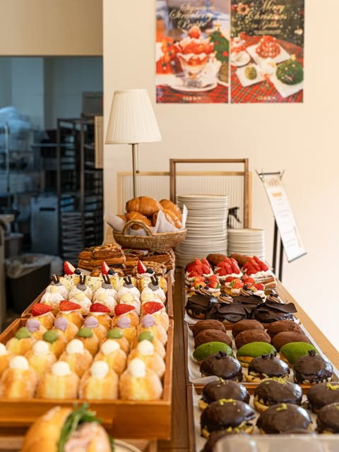
골디스 @goldies.korea
디저트 1순위도넛연중무휴
수제 도넛·베이커리. 최근 릴스가 전부 도넛인데, 생햄과 크림을 올린 세이보리 쪽이 간판처럼 올라옵니다. 쇼케이스에는 과일 타르트가 가득합니다.
행궁동 본점 10:30–22:00 연중무휴
수원 타임빌라스점 3층에도 있음
1박 2일 · 숙소 교동공영주차장 인근 · 2026.10
인스타 계정을 직접 열어서 최근 게시물과 릴스를 보고 고른 곳들입니다. 각 카드에서 인스타 원문을 그 자리에서 펼쳐 볼 수 있습니다. 넷이 거의 모든 시간을 같이 보내고, 갈라지는 건 첫날 앞 2시간 20분과 둘째 날 뒤 5시간 반뿐입니다.
Day1 13:00 — Day2 16:00
수원역 → 숙소에 짐만 내려놓기
교동까지 택시 8분. 체크인 전이면 캐리어만 맡기고 바로 나옵니다. 통닭거리가 숙소에서 걸어갈 거리입니다.
통닭거리에서 왕갈비통닭 ★★★
치킨무 대신 양배추 샐러드가 깔리는 옛날식. 용성통닭(정조로800번길 15, 11:00–23:00, 화 휴무) 또는 옆집 진미통닭(월 휴무). 셋이 한 마리면 충분 — 져니 몫은 밤 야식으로 남깁니다.
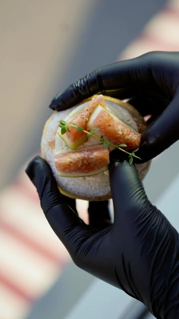
행궁동 디저트 — 여기서 져니 합류 ★★★
져니는 15:21 수원역 도착 → 택시 10분이라 카페로 바로 오면 15:40 합류. 역까지 마중 안 가도 됩니다. 아래 디저트 카드에서 골라 두세요. 1순위는 골디스(도넛)와 스퀘어드(케이크).
화서문 성곽 + 소품샵 골목
카페에서 미술관까지 걸어가는 길에 끼워 넣는 45분. 소품샵은 목적지로 삼지 말고 지나가며 들르는 게 낫습니다.
수원시립미술관 ★★★
화성행궁 옆 행궁 본관. 10월 전시는 소장품 중심의 《블랑 블랙 파노라마》 — 이배·이순종·최병소 등 20점. 1시간 10분이면 여유롭게 봅니다. 카드 보기
행궁동에서 저녁
점심이 통닭이었으니 가볍게. 미술관에서 행궁동 골목까지 도보 5분. 19:00 야간개장 전까지 40분 안에 끝나는 메뉴로.
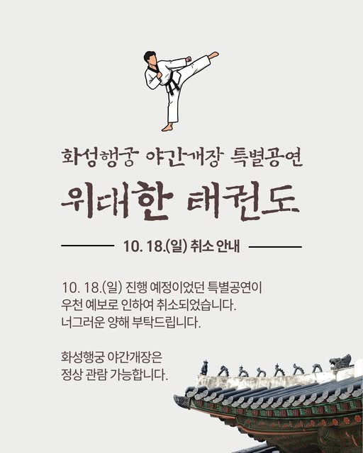
화성행궁 야간개장 ‘달빛화담’ ★★★
행궁을 환영의 빛·몰입의 빛·놀이마당·사색의 공간 네 테마로 나눠 3D 홀로그램, 레이저, 나비 드론, 달빛 윤무 사진관으로 채웁니다. 카드 보기
방화수류정·용연 야경
성곽에 조명이 들어오는 시간. 용두 바위 위 정자와 연못이 같이 잡히는 각이 그 사진입니다. 무료. 수원천 따라 교동 숙소까지 도보 25분.
야식 — 져니는 여기서 통닭 ★
용성통닭이 23:00까지. 낮에 못 먹은 져니 몫이자 넷이 앉아 얘기하는 시간.
수원천 아침 산책 — 교동 → 지동교
숙소에서 그대로 나와 물길 따라. 져니 열차 때문에 성곽 코스는 오후로 미룹니다.
아침은 테이크아웃
행궁동 카페는 대부분 11–12시에 엽니다(스퀘어드·공간상점 12:00, 빅팬트리 11:00). 아침은 교동·매교역 베이커리나 수원역에서 해결하는 게 안전합니다.
넷이 같이 수원역 — 져니 배웅
셋도 오후에 역으로 와야 하니, 이때 코인락커에 짐을 맡기면 숙소로 되돌아갈 일이 없습니다. 10:22 출발.
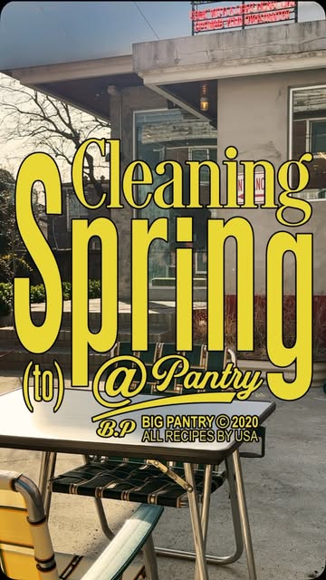
브런치 — 빅팬트리 11:00 오픈 ★
행궁동에서 이 시간에 여는 몇 안 되는 곳. 미국식 팬케이크 전문입니다. 아니면 어제 못 간 디저트집을 11–12시 오픈 시간에 맞춰. 카드 보기
화성행궁 주간 관람 ★★★
어젯밤 조명으로 본 그 공간을 낮에 다시 보는 게 이 일정의 숨은 재미입니다. 밤엔 연출 때문에 안 보이던 봉수당·낙남헌 구조가 낮에 제대로 보입니다. 1시간 반.
점심 — 지동시장 쪽
행궁에서 도보 10분. 먹고 선물거리도 같이 보면 동선이 겹치지 않습니다.
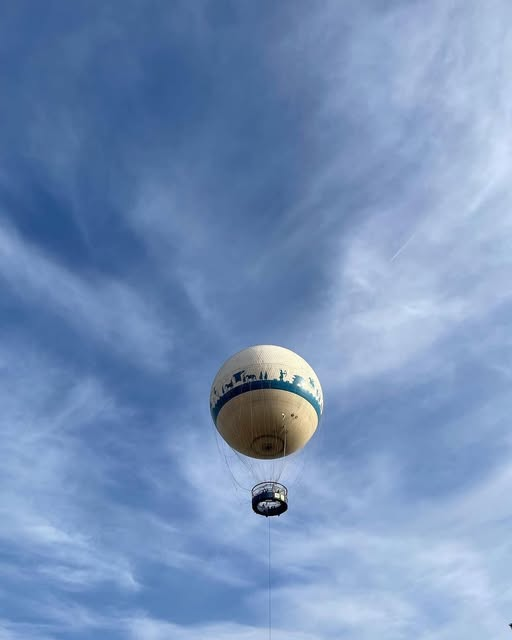
마지막 한 칸 — 셋 중 하나
| 선택 | 내용 | 리스크 |
|---|---|---|
| 성곽 걷기 | 창룡문 → 동북공심돈 → 연무대. 무료, 시간 조절 자유 | 없음 — 가장 안전 |
| 플라잉수원 | 계류식 헬륨기구, 150m 상공에서 화성 전체. 탑승 10분, 2만 원대 | 대기 1–2시간 + 기상 결항 |
| 화성어차 | 연무대 → 화홍문 → 장안문 → 화서문 → 매향교 순환 20분. 어른 6,000원 | 10/4–11 중단 후 10/13 재개 — 운행 확인 필수 |
수원역 — 15:56 출발
행궁동에서 택시 10분. 아침에 맡긴 짐 찾아서 탑승.
계정 10곳 · 게시물은 썸네일로 확인

수제 도넛·베이커리. 최근 릴스가 전부 도넛인데, 생햄과 크림을 올린 세이보리 쪽이 간판처럼 올라옵니다. 쇼케이스에는 과일 타르트가 가득합니다.
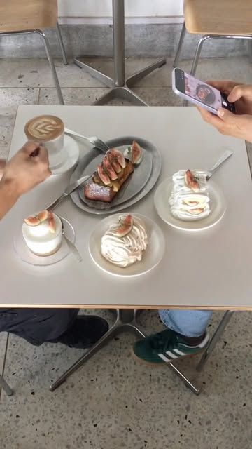
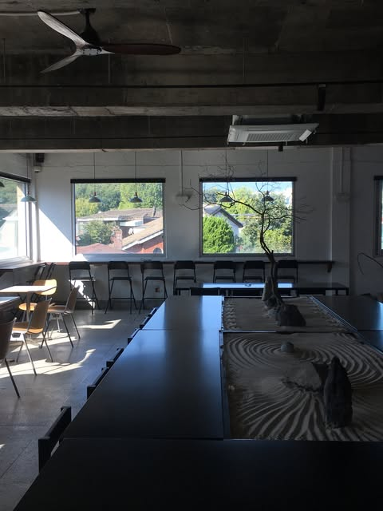
조각 케이크를 한 상에 늘어놓은 릴스가 대표 이미지. 공간이 넓고 창가 자리가 많아 넷이 앉기 좋습니다. 홀케이크는 네이버 예약.
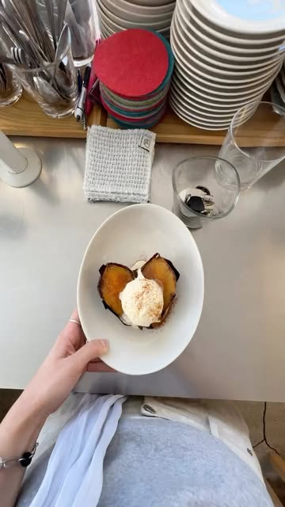
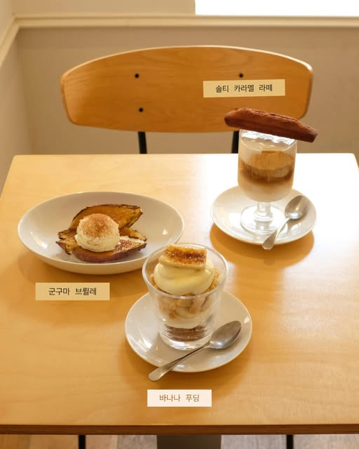
연남동에서 건너온 집. 계정에서 릴스 비중이 가장 높고, 시즌 과일 디저트(‘수신멜론을 찾아서’ 같은 것)를 릴스로 밀어 올립니다. 아인슈페너가 시그니처.
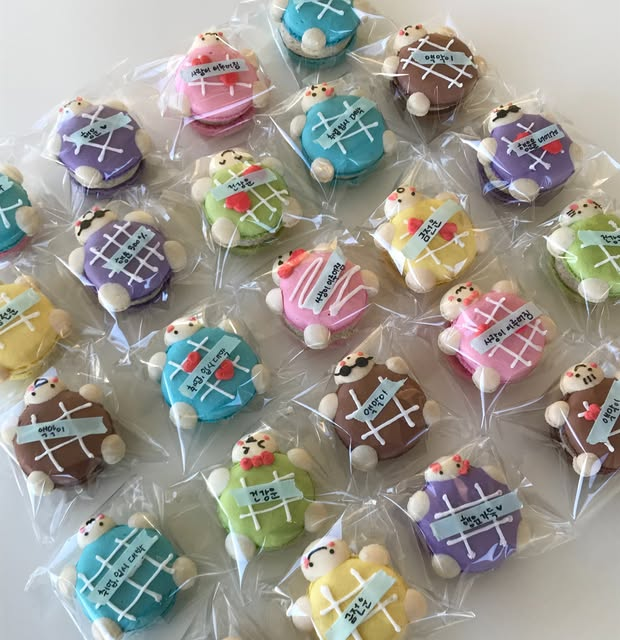
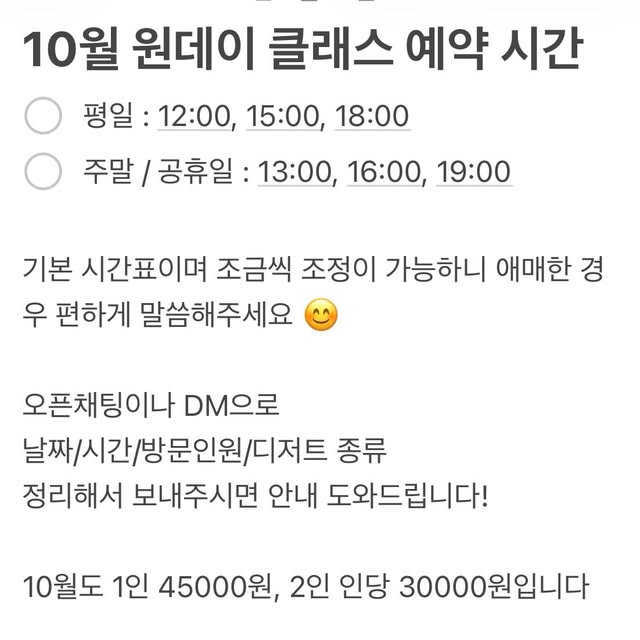
카페이자 디저트 원데이 클래스. 계정 게시물의 절반이 클래스 예약 안내고, 나머지가 수강생이 만든 색색의 미니 케이크입니다. “디저트 먹기”를 “디저트 만들기”로 바꾸고 싶으면 여기.
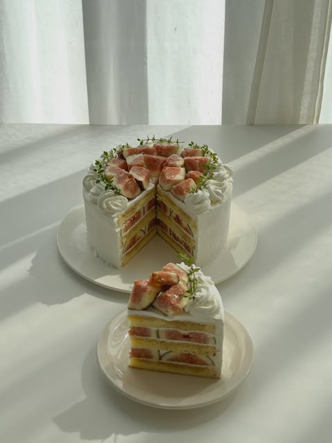
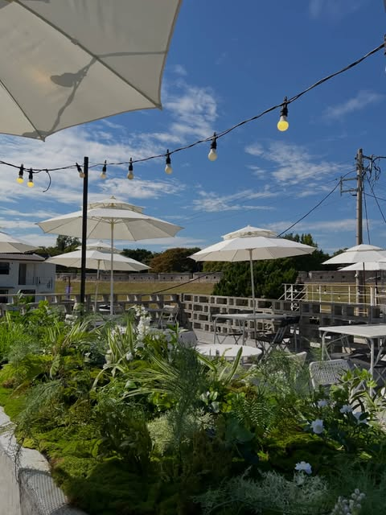
‘공간을 팝니다’가 소개 문구. 제철 과일 홀케이크와 파라솔·조명 깔린 야외 마당이 번갈아 올라옵니다. 행궁에 1·2호점이 따로 있어 한 곳이 꽉 차면 옆으로 옮기면 됩니다.
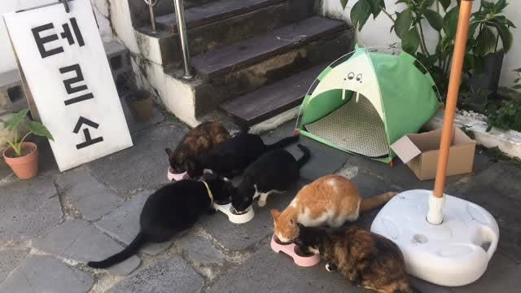
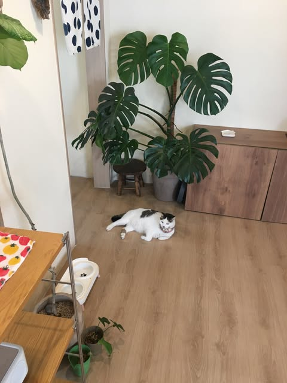
메뉴는 수플레인데 계정은 거의 고양이 계정입니다. 최근 릴스도 고양이 세 마리. 고양이 좋아하면 1순위, 아니면 건너뛰어도 됩니다.
미국식 팬케이크 전문. 행궁동에서 11시에 여는 몇 안 되는 집이라 둘째 날 브런치 자리에 넣었습니다. 최근 게시물은 메뉴보다 공지(협업 핫도그 등)가 많습니다.
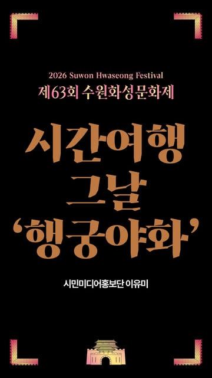
수원문화재단(팔로워 2.4만) 공식 계정. 지금 피드에 올라오는 건 야간개장 특별공연 일정 변경 안내와 이미 끝난 행궁야화 아카이브입니다.
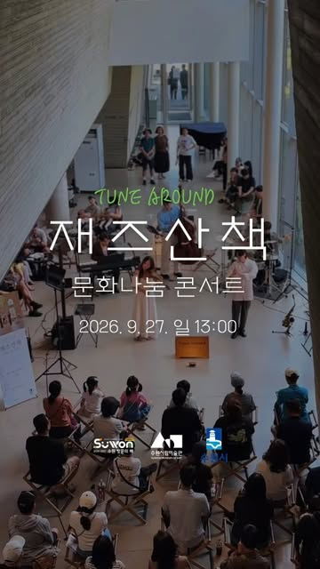
팔로워 1.9만. 피드는 전시보다 교육·프로그램 공지가 많습니다. 10월 전시는 《블랑 블랙 파노라마》 — 소장품 중심으로 흑과 백을 축에 둔 이배·이순종·최병소 등 20점.
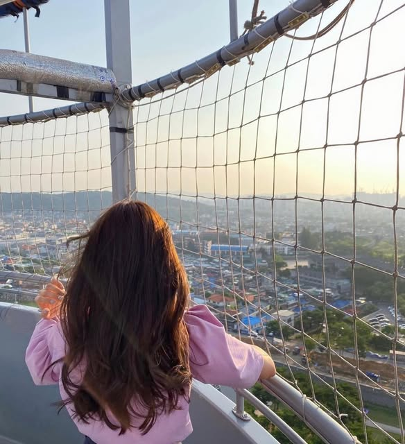
열기구가 아니라 계류식 헬륨기구. 150m에서 화성을 한 장에 담습니다. 성곽과 기구가 같이 잡히는 각이 이 계정의 대표 사진입니다.
| 이런 경우 | 이렇게 바꿉니다 |
|---|---|
| 금·토가 아닌 날 | 야간개장 없음 → 저녁 먹고 바로 방화수류정·용연 야경(무료). 비는 시간에 공간상점(22시까지)을 넣습니다. |
| 월요일에 걸림 | 미술관 휴관 + 빅팬트리 휴무 → Day1 17:00을 화성행궁 주간 관람으로 당기고, Day2 11:40은 성곽 걷기로. |
| 화요일에 걸림 | 용성통닭·테르소 휴무 → 통닭은 진미통닭(월 휴무라 화요일은 영업)으로. |
| 비 | 성곽·용연을 빼고 미술관 체류를 늘리고 실내 카페 두 곳. 통닭거리는 비와 무관. |
| 디저트를 먹지 말고 만들고 싶으면 | Day1 15:00 자리를 쏘블리 원데이 클래스로 교체(주말 13·16·19시, 1인 45,000원). 선입금 예약 필요. |
| 항목 | 1인 | 메모 |
|---|---|---|
| 화성행궁 야간개장 | 2,000원 | 한복 착용 시 무료 |
| 수원시립미술관 | 4,000원대 | 현장 확인 · 문화가 있는 날 무료 |
| 화성행궁 주간 관람 | 1,500원대 | Day2 |
| 화성어차 / 플라잉수원 (선택) | 6,000 / 20,000원대 | 운행·결항 확인 |
| 쏘블리 원데이 클래스 (선택) | 30,000–45,000원 | 2인 이상이면 인당 30,000원 |
| 택시 4~5회 | 6,000원×5 | 나눠 타면 1인 부담 1/3~1/4 |
| 식사 + 디저트 2회 | 60,000원대 | 통닭 두 번(점심·야식) 포함 |